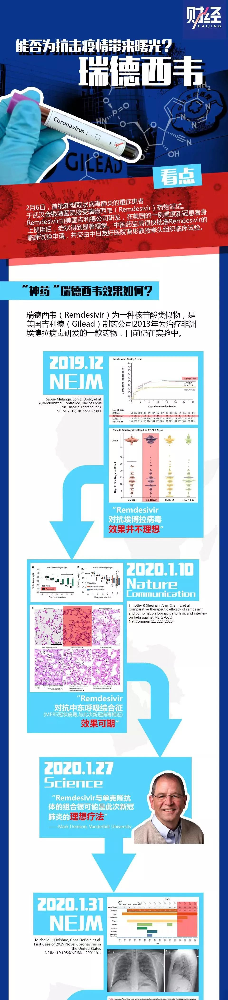

抗击新冠，瑞德西韦进入III期临床试验
原文链接 备份链接 新冠病毒肺炎的临床治疗有了新进展：一款未上市的药物在一名美国重症患者身上使用后，症状得到了明显缓解。这款叫做瑞德西韦（remdesivir）的药物也一夜之间受到了前所未有的关注，几天之内中国药监局确认受理瑞德西韦的临 …

文·图 |《财经》记者 李斯洋
编辑 | 马克
2月6日，首批新型冠状病毒肺炎的重症患者于武汉金银潭医院正式接受新药瑞德西韦（Remdesivir）的临床测试。
2月5日下午，中国工程院院士、中日友好医院原院长王辰，中日友好医院呼吸与危重症医学科主任曹彬两名教授率队在武汉金银潭医院宣布：启动瑞德西韦三期临床研究，将有761例患者（其中轻、中症患者308例，重症患者435例）进入测试，并采用随机、双盲、安慰剂对照方法进行研究，以评价瑞德西韦在治疗新型冠状病毒感染的疗效和安全性。
瑞德西韦是一款目前仍处于实验阶段的药物，由美国吉利德（Gilead）公司研发，原本用于治疗埃博拉病毒。1月31日，《新英格兰医学杂志》（NEJM）称，在美国的一例重度新冠患者身上使用瑞德西韦后，症状得到显著缓解。基于“同情用药”原则，中国药监局很快批准了瑞德西韦的临床试验申请，并交由曹彬教授牵头组织临床测试。
瑞德西韦何时能够广泛使用？曹彬2月6日向媒体表示，科学需要时间，不通过随机双盲临床研究没人敢确定疗效。吉利德公司也向媒体表示，因为对瑞德西韦对抗新型冠状病毒的疗效尚无足够了解，目前无法预测药物何时能被广泛使用。但吉利德表示，考虑到当前的紧迫情况，会采取多种措施增加供应。
2月4日下午，首批2843盒Remdesivir运抵北京。进口通关单显示，瑞德西韦每支（150毫克）单价约20美元。


▲点击图片查看更多疫情报道
责编 | 黄端 duanhuang@caijing.com.cn
本文为《财经》杂志原创文章，未经授权不得转载或建立镜像。如需转载，请在文末留言申请并获取授权。
原文链接 备份链接 新冠病毒肺炎的临床治疗有了新进展：一款未上市的药物在一名美国重症患者身上使用后，症状得到了明显缓解。这款叫做瑞德西韦（remdesivir）的药物也一夜之间受到了前所未有的关注，几天之内中国药监局确认受理瑞德西韦的临 …
原文链接 备份链接 瑞德西韦已在我国进入临床测试阶段，《潜望》从接近该临床试验人员处获悉，瑞德西韦试验的第一例患者从重症到恢复，用时不到24小时，“效果很好”。 《潜望》 作者 纪振宇 刘鹏 一起基于“同情用药”准则下的治愈案例，让美国制 …
原文链接 备份链接 1月31日《新英格兰医学杂志》（NEJM）在线发表的一篇论文显示，吉利德（Gilead）公司研发的抗病毒药瑞德西韦（remdesivir）治愈了美国首例新型冠状病毒肺炎确诊病例。在这关键时刻，这个好消息引起了广大民众尤 …
原文链接 备份链接 作者：任尚坤 来源：*商业人物*（ID：*biz-leaders）* 谣言又来了，辟谣也来了。这次是关于一款“神药”。 希望 “瑞德西韦生效，17-40小时病人好转90%以上。” 这是美国吉利德公司的在研药物，英文原 …
原文链接 备份链接 一则来自中国科学院武汉病毒研究所的信息刷屏了。 2 月 4 日，这则发布于病毒所官网的《我国学者在抗 2019 新型冠状病毒药物筛选方面取得重要进展》称，中国科学院武汉病毒研究所与军事科学院的研究人员发现瑞德西 …